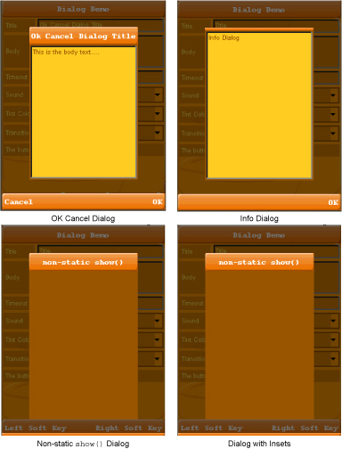

| LWUIT Developer’s Guide |
| C H A P T E R 5 |
A Dialog is a form that occupies a part of the screen as a top level component. By default dialogs always appear as a modal entity to the user. Modality indicates that a dialog blocks the calling thread even if the calling thread is the Event Dispatcher Thread (EDT). Dialogs allow us to prompt users for information and rely on the information being returned as a response after the dialog show method. Each Dialog has a body that is located in the center of the dialog. The Body can contain a component, so you can use your own customer component or pre‐built container.
Note - A modal dialog does not release the block until a dispose method is called. For example, calling show() from another form does not release the block. |
For better user experience, dialogs have five types of alerts. The alert type indicates a sound to play or an icon to display if none is explicitly set:
By default the alerts are set to play the device alert sounds.
Icons are not currently provided by default, but you can manually add them to customized dialogs. Icons can be used to indicate the alert state, similar to JDialog icons in Swing. See http://java.sun.com/docs/books/tutorial/uiswing/components/dialog.html.
To create and show a dialog you can do the following:
Create and show the dialog using one of the static show methods.
Use new Dialog() and invoke its show() method. The static methods are only helpers.
The arguments to all of the show methods are standardized, though the number of arguments for each method varies. The static show methods provide support for laying out standard dialogs, providing icons, specifying the dialog title and text, and customizing the button text.
The following list describes each argument. To see the exact list of arguments for a particular method, see the Dialog API in the API documentation located in install‐dir/docs/api/lwuit.
Component placed in the center of the dialog. This component can be a container that contains other components.
The text displayed in the dialog which can be used instead of Body.
Array of commands that are added to the dialog. Any click on any command disposes of the dialog. Examples of commands are OK and Cancel.
The type of the alert can be one of TYPE_WARNING, TYPE_INFO, TYPE_ERROR, TYPE_CONFIRMATION or TYPE_ALARM to indicate the sound to play or an icon to display.
The icon to display in the dialog.
A timeout in milliseconds, after which the dialog closes and null is returned. If time-out value is 0, the dialog remains open indefinitely, until its dispose method is invoked.
The transition installed when the dialog enters and leaves the screen. For more information see Transition.
The text to appear in the command dismissing the dialog.
Optionally null for a text to appear in the cancel command for canceling the dialog.
Inset in pixels between the top of the screen and the form.
Inset in pixels between the bottom of the screen and the form.
Inset in pixels between the left of the screen and the form.
Inset in pixels between the right of the screen and the form.
Whether the title should hang in the top of the screen or be glued onto the dialog content pane.
You can use one of three convenient return value show methods: void, Command, or boolean.
Command returns the command object the user clicked. See the Command API in the API documentation found in install-dir/docs/api/lwuit.
The boolean value of true is returned when the OK command is pressed or if cancelText is null (meaning there is no cancel command text visible). It is false otherwise.
The dialog API provides two non-static methods to create two more types of dialogs.
The first method takes no arguments and produces a dialog without any commands. The only way to close such a dialog is to invoke the dispose() method on the dialog. Since the dialog is blocking, meaning once the dialog is displayed its calling thread can not proceed until it is closed, the call to dispose must be made from a different thread. To do this, schedule the call to dispose with a timer thread. Note that the timer thread must be started before the dialog is displayed. This approach is referred to as an auto-closing dialog.
The second dialog type has five parameters. The first four are the four wing insets (top, bottom, left, and right) and the fifth parameter determines whether to include the Dialog title assigned through the dialog constructor (see FIGURE 5-1).
// Call show with inset parameters dialog.show(90, 90, 10, 10, true);
The dispose methods closes the current dialog and returns to the parent form. When show() is used without arguments, one way to close the dialog is to set a timer to call dispose just before calling the show method (otherwise the dispose method is never performed).
As mentioned in Non-Static Show Methods, return value types can be either Command or a boolean value. For example, if a user has a dialog with two commands, Approve and Decline, the user clicks and the selected command is returned. For the boolean return type, a true or false value indicates whether the user clicked the OK command.
| LWUIT Developer’s Guide | 12-11-09 |
Copyright © 2009, Sun Microsystems, Inc. All rights reserved.